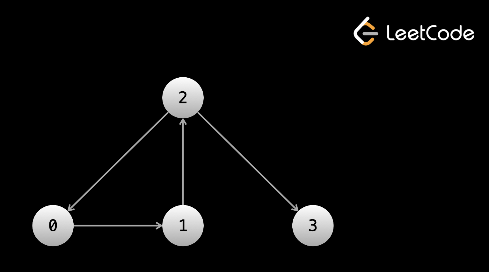
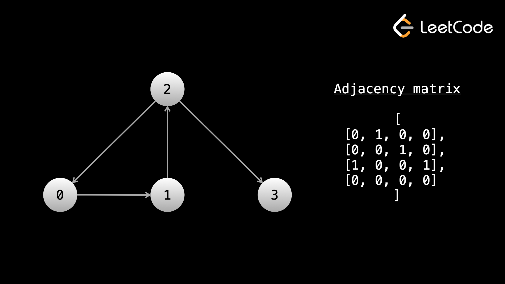

Теперь, когда мы знакомы с двоичными деревьями, давайте поговорим о более широкой картине: о графах.
Граф — это любая совокупность узлов и связей между этими узлами.
Другой термин для узлов — вершины, а соединения между узлами называются ребрами.
Помните, что бинарное дерево — это граф, просто у него много ограничений. Наиболее заметными из них являются то, что каждый узел имеет не более одного родительского и не более двух дочерних узлов. Когда мы снимем ограничения, графы смогут принимать гораздо больше форм.
Графы являются частью нашей повседневной жизни. Даже не прилагая особых усилий, вы можете смоделировать в виде графа буквально что угодно. Некоторыми примерами практического применения могут быть социальные сети, такие как Facebook, Twitter, Instagram и TikTok, дороги в городах, печатные платы, интернет-трафик, криптоблокчейны, модели в биологии и многое другое.
Прежде чем мы углубимся, вам сначала необходимо ознакомиться с некоторой терминологией графов.
Ребра узла могут быть направленными или ненаправленными. Направленные края означают, что вы можете перемещаться только в одном направлении. Если вы находитесь в узле A и есть направленное ребро, ведущее к узлу B, вы можете двигаться от A -> B, но, оказавшись в B, вы не можете перемещать B -> A. В графических представлениях направленные ребра будут быть стрелками между узлами. Ненаправленные края означают, что вы можете перемещаться в обоих направлениях. Таким образом, используя тот же пример, вы можете перейти от A -> B и B -> A. В графических представлениях ненаправленные ребра будут просто прямыми линиями между узлами.
В бинарных деревьях ребра были направленными. Бинарные деревья представляют собой ориентированные графы. Вы не можете получить доступ к родителю узла, только к его дочерним элементам. Попав к ребенку, вы не сможете вернуться назад.
Еще один важный термин — связный компонент. Компонент связности графа — это группа узлов, соединенных ребрами. На первом и третьем графиках, показанных на анимации выше, имеется только один связный компонент. Во втором графе имеются три компонента связности.
В двоичных деревьях должен быть только один компонент связности (все узлы доступны из корня).
К узлу может быть подключено любое количество ребер. Если у нас есть ориентированный граф, из него может быть любое количество выходящих из него ребер и любое количество входящих в него ребер. Количество ребер, которые можно использовать для достижения узла, называется входной степенью узла. Количество ребер, которые можно использовать для выхода из узла, является исходящей степенью узла. Узлы, соединенные ребром, называются соседями. Итак, если у вас есть граф типа A <-> B <-> C, A является соседом B, B является соседом A и C, а C является соседом B.
В двоичных деревьях все узлы, кроме корня, имели входную степень 1 (из-за их родителя). Все узлы имеют степень выхода 0, 1 или 2. Степень выхода 0 означает, что это лист. Что касается деревьев, мы использовали термины «родитель/потомок» вместо «соседи».
Граф может быть цикличным или ацикличным. Цикличный означает, что в графе есть цикл, ацикличный означает, что его нет. В главе о связанном списке мы узнали, что такое цикл — это когда у вас есть путь в ребрах, который приводит к бесконечному посещению одних и тех же узлов.
Двоичные деревья по определению не могут иметь цикл.
В задачах со связанными списками указывается head связанного списка. В задачах о двоичных деревьях указывается root дерева. В задачах о графах дается только информация о графе. Существует несколько распространенных форматов этой информации. Мы рассмотрим некоторые из них.
Важно понимать, что при использовании связанных списков и двоичных деревьев вам буквально предоставляются в памяти объекты, содержащие данные и указатели. В случае с графами, граф не существует в памяти в буквальном смысле. Фактически существует только «идея» графа. Входные данные дадут вам некоторую информацию об этом, и вам предстоит выяснить, как представить и пройти граф с помощью кода. Во многих случаях узлы графа будут помечены от 0 до n - 1. В постановке задачи может быть указано, или не указывается, что входные данные являются графом. Иногда это может быть история, и вам нужно определить, что входные данные представляют собой граф. Например, «есть n городов, отмеченных цифрами от 0 до n – 1». Вы можете рассматривать каждый город как узел, и каждый город имеет уникальную метку.
С двоичными деревьями обход был простым, поскольку в любом node нам нужно было ссылаться только на node.left и node.right. Это позволило нам сосредоточиться только на обходе (с помощью DFS или BFS). В графах узел может иметь любое количество соседей. Прежде чем мы начнем обход, нам обычно нужно проделать некоторую работу, чтобы убедиться, что для любого данного node мы можем немедленно получить доступ ко всем соседям указанного узла.
Что мы подразумеваем под этим? Лучше всего это объяснить на примере.
В этом формате входными данными будет двумерный массив. Каждый элемент массива будет иметь форму [x, y], что указывает на наличие края между x и y. Проблема может иметь историю для этих ребер - если использовать пример с городами, история будет выглядеть примерно так: «[x, y] означает, что существует шоссе, соединяющее города x и города y».
Края могут быть направленными и ненаправленными. Эта информация будет в описании проблемы.
Итак, почему мы не можем сразу начать обход? Допустим, мы хотим запустить DFS с узла 0 (иногда проблема будет указывать, с какого узла вам следует начать, иногда вам придется выяснить это самостоятельно). Когда мы находимся в узле 0, как нам найти соседей? Нам нужно будет перебрать весь ввод, чтобы найти все ребра, содержащие 0. Когда мы перейдем к соседнему узлу, нам нужно будет еще раз перебрать весь ввод, чтобы найти всех соседей этого узла.
На каждом узле нам нужно будет перебрать весь ввод, чтобы найти соседей. Это очень медленно!
Прежде чем начать обход, мы можем предварительно обработать входные данные, чтобы легко найти всех соседей любого заданного node. В идеале вам нужна структура данных, в которой вы можете указать node в качестве аргумента и получить список соседей. Самый простой способ добиться этого — использовать хеш-карту.
Допустим, у вас есть graph хэш-карты, который отображает целые числа в списках целых чисел. Мы можем перебирать входные данные и для каждой пары [x, y] помещать y в список, связанный с graph[x]. Если ребра ненаправленные, нам также нужно будет поместить x в список, связанный с graph[y]. После построения этой хеш-карты мы можем выполнить graph[0] и сразу же получить всех соседей узла 0.
Хорошая аналогия: представьте, что вы находитесь на Facebook и хотите увидеть список всех своих друзей. Однако инженеры Facebook решили сохранить свой граф в виде массива рёбер! Вам нужно будет просмотреть каждую связь в мире (которая, вероятно, исчисляется сотнями миллиардов, если не триллионами) и найти связи, которые вас затрагивают. Однако, если график построен заранее, вы можете легко щелкнуть вкладку «Друзья» в своем профиле, чтобы увидеть только своих друзей.

Граф в этом примере может быть представлен массивом направленных ребер: ребра = [[0, 1], [1, 2], [2, 0], [2, 3]].
Обратите внимание, что граф на изображении не существует в памяти. Он существует только как идея, полученная из массива [[0, 1], [1, 2], [2, 0], [2, 3]].
Вот пример кода для построения графа из массива ребер:
from collections import defaultdict
def build_graph(edges):
graph = defaultdict(list)
for x, y in edges:
graph[x].append(y)
# graph[y].append(x)
# uncomment the above line if the graph is undirected
return graph
В списке смежности узлы будут пронумерованы от 0 до n - 1. Входными данными будет двумерный целочисленный массив, назовем его graph. graph[i] будет списком всех исходящих ребер из i-го узла.
Граф на изображении выше может быть представлен списком смежности graph = [[1], [2], [0, 3], []].
Обратите внимание, что с помощью этих входных данных мы уже можем получить доступ ко всем соседям любого данного node. Нам не нужно делать никакой предварительной обработки! Это делает список смежности наиболее удобным форматом. Если нам нужны все соседи узла 6, мы просто проверяем graph[6].
Следующий формат — матрица смежности. Еще раз узлы будут пронумерованы от 0 до n - 1. Вам будет предоставлена двумерная матрица размером n x n, назовем ее graph. Если graph[i][j] == 1, это означает, что существует выходящее ребро из узла i в узел j. Например:

При использовании этого формата у вас есть два варианта. Во время обхода в любом заданном node вы можете перебирать graph[node], и если graph[node][i] == 1, то вы знаете, что узел i является соседом. Альтернативно, вы можете предварительно обработать граф, как мы это делали с массивом ребер. Создайте хэш-карту, а затем выполните итерацию по всему graph. Если graph[i][j] == 1, то поместите j в список, связанный с graph[i]. Таким образом, при выполнении обхода вам не придется повторять n раз на каждом узле, чтобы найти соседей. Это особенно полезно, когда у узлов всего несколько соседей и n велико.
Оба этих подхода будут иметь временную сложность O(n2).(n в квадрате)
Последний формат, о котором мы поговорим, более тонкий, но очень распространенный. Входными данными будет двумерная матрица, а задача будет описывать историю. Каждый квадрат будет что-то обозначать, и квадраты будут каким-то образом связаны. Например: «Каждый квадрат матрицы представляет собой деревню. Деревни торгуют с соседними деревнями, то есть деревнями, расположенными непосредственно над ними, слева, справа или под ними».
В этом случае каждый квадрат (row, col) матрицы является узлом, а соседями являются (row - 1, col), (row, col - 1), (row + 1, col), (row, col + 1) (если в пределах).
Есть несколько больших различий между решением задач на графах и решением задач на двоичных деревьях. Хотя двоичное дерево имеет корневой узел, с которого можно начать обход, граф не всегда имеет очевидную «начальную» точку.
В бинарном дереве нам даны объекты для узлов, и каждый узел имеет указатель на своих дочерних элементов. В графе нам может потребоваться сначала преобразовать входные данные в хэш-карту. При обходе дерева мы ссылаемся на node.left и node.right в каждом node. При обходе графа нам нужно будет использовать цикл for для перебора соседей текущего узла, поскольку узел может иметь любое количество соседей.
Реализация DFS для графов аналогична реализации для деревьев. Выполнение этого рекурсивно следует тому же формату: проверка базового случая, рекурсивный вызов всех соседей, выполнение некоторой логики для вычисления ответа и возврат ответа. Вы также можете сделать это итеративно, используя стек.
В любом неориентированном графе или ориентированном графе с циклами реализация DFS так же, как мы это делали с двоичными деревьями, приведет к бесконечному циклу (помните циклы связанных списков? Представьте себе, что ваш код вечно ходит по кругу!). Как и в случае с деревьями, в большинстве вопросов о графах нам нужно (и мы хотим) посетить каждый узел только один раз. Чтобы предотвратить циклы и ненужное посещение узла более одного раза, мы можем использовать set seen. Прежде чем посетить узел, мы сначала проверяем, есть ли этот узел в множестве seen. Если это не так, мы добавляем его в список просмотренных перед посещением. Это позволяет нам посещать каждый узел только один раз во Время O(1), поскольку добавление и проверка наличия в наборе занимает постоянное время.
В случае с деревьями в этом не было необходимости, потому что мы начинали с корня, а края двигались только «вниз» — как только мы покидали узел, не было возможности вернуться к нему. С помощью графов вы можете иметь отношения типа A <-> B и вечно перемещаться между A и B.
Что касается того, с какого узла нам следует начать обход, это будет зависеть от проблемы и того, что вы пытаетесь решить. Давайте перейдем к некоторым примерам в следующей статье. Рекомендуется сохранить эту статью открытой на отдельной вкладке, чтобы использовать ее в качестве справочного материала.
Важное примечание: в таком языке, как Python, использовать set seen очень просто и относительно быстро. В других языках может быть намного лучше (с точки зрения времени выполнения) использовать массив для seen, если известен диапазон состояний (что обычно так и есть, поскольку в большинстве задач на графах узлы пронумерованы от 0 до n - 1).